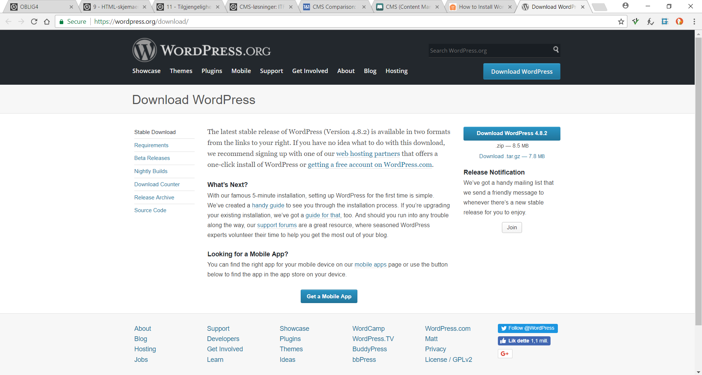
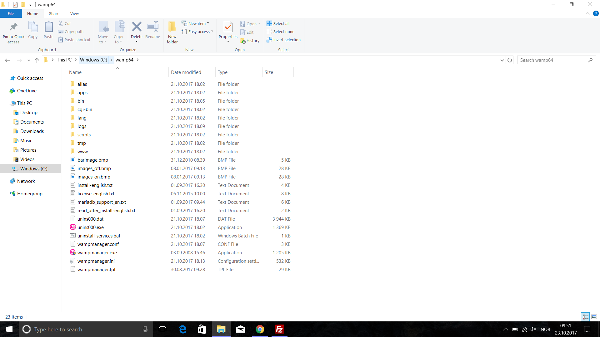
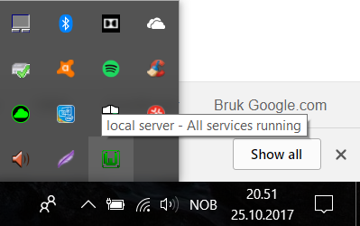
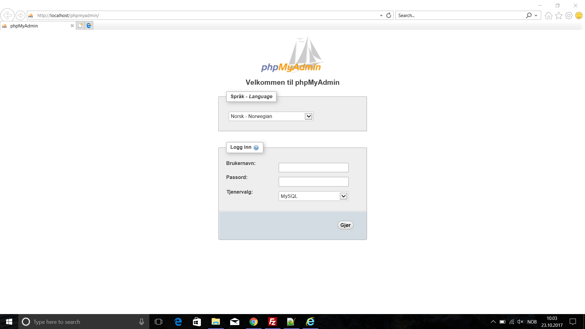
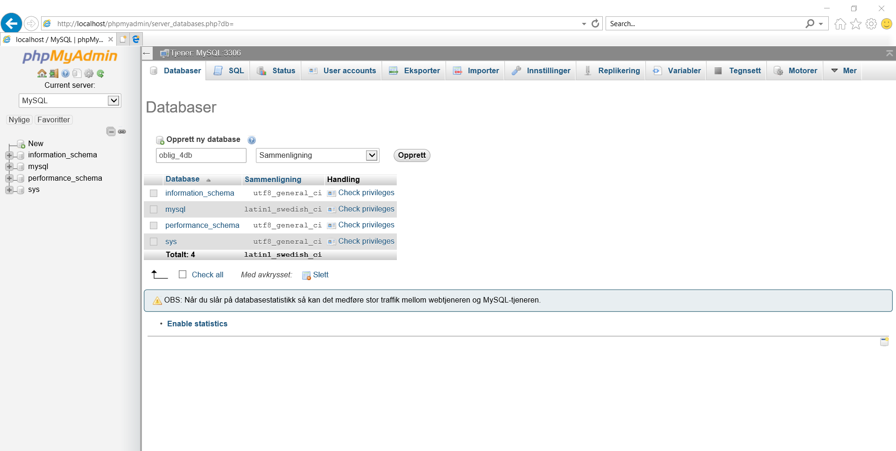
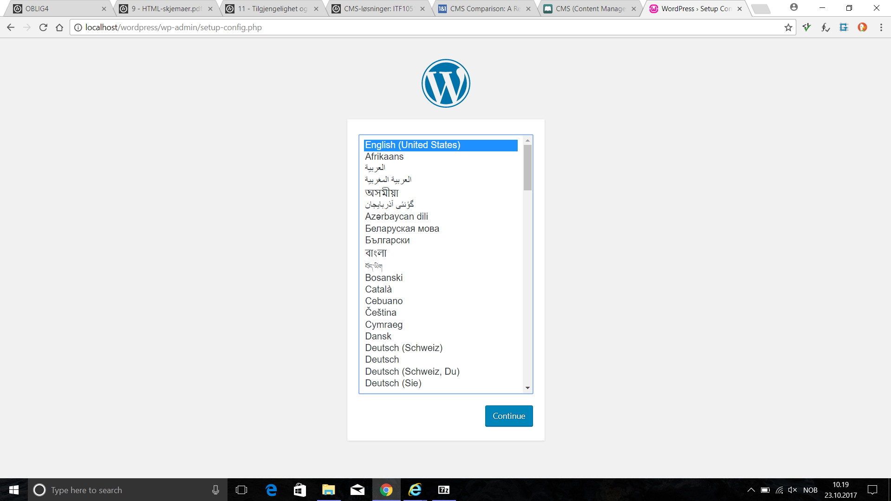
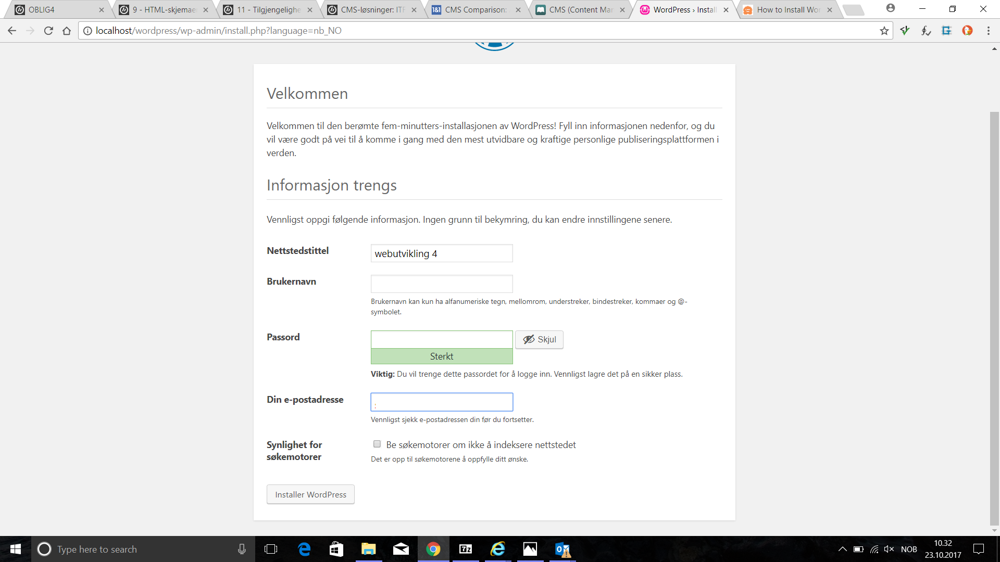
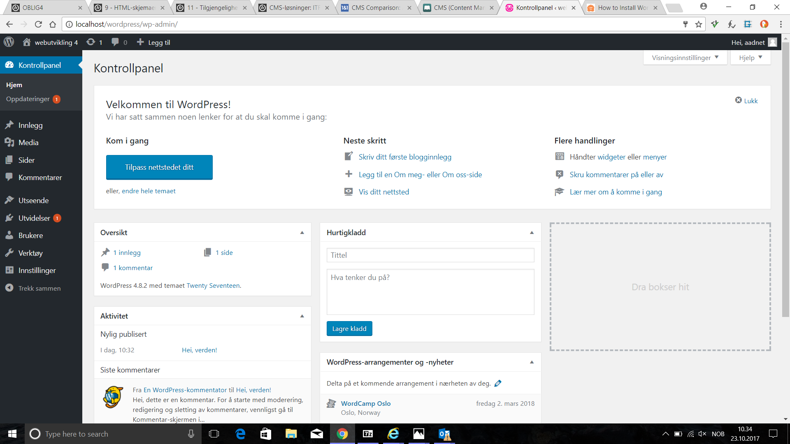
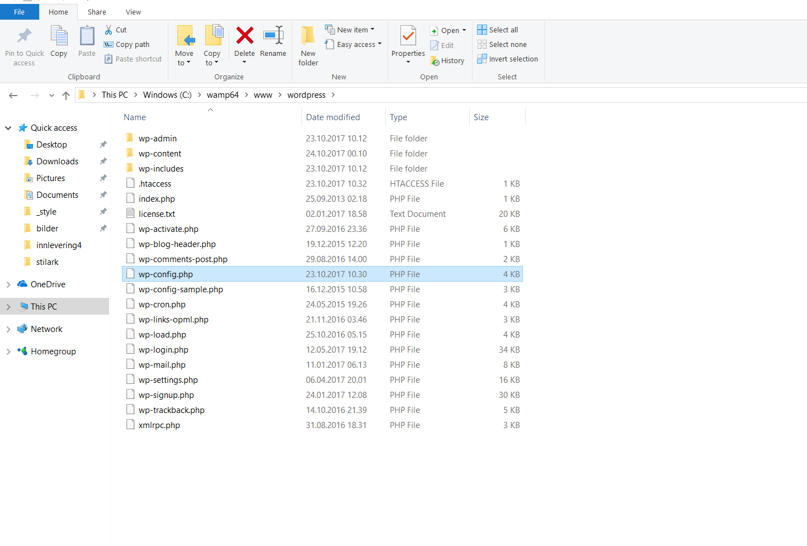

Installasjon av wordpress og Wamp
Kort informasjon om hva WAMP og wordpress er
Definisjon: WAMP står for "Windows Apache MySQL and PHP ". Dette er en alt-i-ett-tjeneste for lokal servervirksomhet og inkluderer: en server (Apache), et dynamisk skripting-språk (PHP), en database (MySQL) og som kjører på et operativsystem (Windows). Macintosh og Linux har på sin side tilsvarende systemer i form av hhv. MAMP og LAMP.
Word-press på sin side er mer eller mindre en side for å styre innhold på en lettere måte, på Englandsk så kalles dette et CMS (Content Management System). Riktignok så startet wordpress som et blogg-system. Rundt 1/3 av alle sider på internett er idag word-press-sider.
Installasjon av WAMP
{kind=link}
Siden jeg har Windows som operativsystem, har jeg lastet ned WAMP. Installasjonen av WAMP utføres ved å laste ned filen ifra. Denne prosedyren er rett fram, og jeg har derfor valgt å ikke beskrive dette i nærmere detalje.
Installasjon av Word-press og å sette opp et nettsted
Word-press kan lastes ned som en Zip-fil, og trengs strengt talt ikke å installeres, bare flyttes over i "www"-mappen, som ligger inni WAMP sitt directory.
Sette opp database
Man begynner prosessen ved å sette opp en database ved å høyreklikke på WAMP-ikonet nederst på startskjermen.
  {kind=link}
{kind=link}
{kind=link}
Deretter skriver man inn "localhost/wordpress/wp-admin/setup-config.php" i nettleseren man bruker. Gitt at man har gjort det riktig, vil bildet da se ut som dette.
{kind=link}
Videre, vil vi bli bedt om et brukernavn og få et kryptert passord.
{kind=link}
Endelig skjermbilde
{kind=link}
Sikkerhetshull i Word-press
Word-press har blitt et ettertraktet mål for hackere grunnet svak (naiv) sikkerhet. Der finnes visse måter man kan helgardere seg imot dette, dog. dette må utføres på et tidlig tidspunkt. På det tidspunktet hvor jeg hadde installert Word-press visste jeg ikke om disse, og hadde allerede kommet for langt inn i prosessen. En endring av disse vil f.eks føre til at siden min hadde sluttet å fungere. Jeg har allikevel valgt å fortelle om hvordan man på best mulig måte kan helgardere seg, ettersom min installasjon avvek ifra "standard prosedyre".
{kind=link}
Her er der en liste over punkter vi bør være obs på når vi setter opp vår bruker:
- Readme-filen inneholder en versjonsbeskrivelse og vil være et lett mål for hackere, både fordi absolutt alle Word-press installasjoner inneholder en slik, og fordi den inneholder kritisk data. Denne bør følgelig fjernes så kjapt som mulig
- Linje 66 i wp-config.php-filen bør endres til noe unikt, ettersom alle har samme wp-table
- Brukernavn bør fjernes med en gang vi har lagd nettstedet, særlig hvis denne heter admin. Grunnen til dette er at denne vil være indeksert under ID 1. En ny bruker vil gi en annen indeks enn 1.